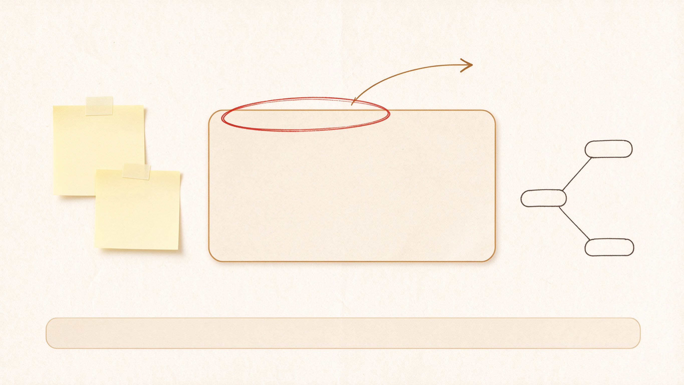
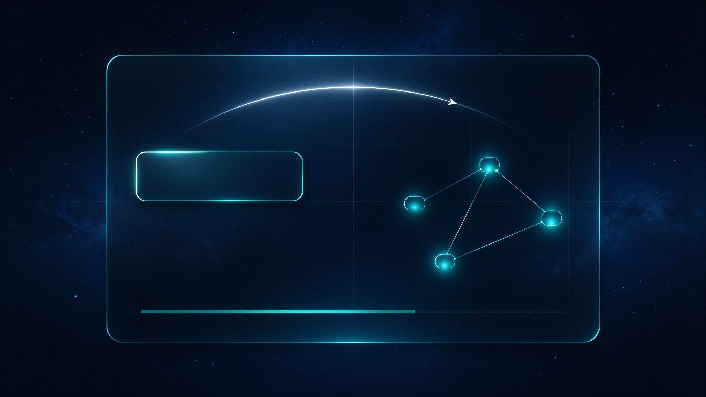

语义驱动的智能剪辑与引导型动效编排工作流。我们的动效不是炫技的特效，而是科普视频里那些把视线带到该看的地方的东西——圈选、关键词卡、结构图、解释插画。这份设计语言定义了它们长什么样、按什么规则出现。
所有动效收敛为五类可编排的事件，由时间轴 JSON 契约驱动。执行器只认契约，不认视频。
叠加在画面上，把视线带到关键位置。
把抽象名词落成字幕条、术语卡，停留可读。
把关系画出来：思维导图、流程图、数据图。
用户没见过的东西，做成示意图展示出来。
场景级代码动画，由同一函数计算帧，天然连贯。
制作前由人选风格预设，锁定后注入审美指导文件。当前两套候选基调（示意：仅表达视觉方向，不含实际文案）。

米白纸张 + 暖褐编辑标注，像知识区编辑台的工作台面。温暖、克制、阅读舒适，适合人文向科普与轻叙事。
● 候选基调 A
深空渐变 + 冷白/青色高亮，精密网格与克制的辉光。冷静、清晰、宇宙感，适合科技向科普与数据解释。
● 候选基调 B质感不是靠玄学提示词，而是靠结构化的三层保障——下限、方向、目标。
预置设计良好的组件与风格预设，决定"地板"——默认不可能丑。社区预设（video-shotcraft 214 风格 / HyperFrames 模板）带效果图对标。
aesthetic-guide.json：色板、字体、特效、风格的方向与限制。人审驳回理由经确认后沉淀为约束，只增不减。
每次制作前选定参考目标，让动效有明确的对齐对象，而不是凭空发挥。
动效出现的纪律，比动效本身更重要。
style-presets.json（id / name / source / palette / typography / motion_language / preview / constraints）。
来源对标 video-shotcraft（镜头配方 + 运动语言）与 HyperFrames（模板带视频 demo）；制作前由人选定基调。